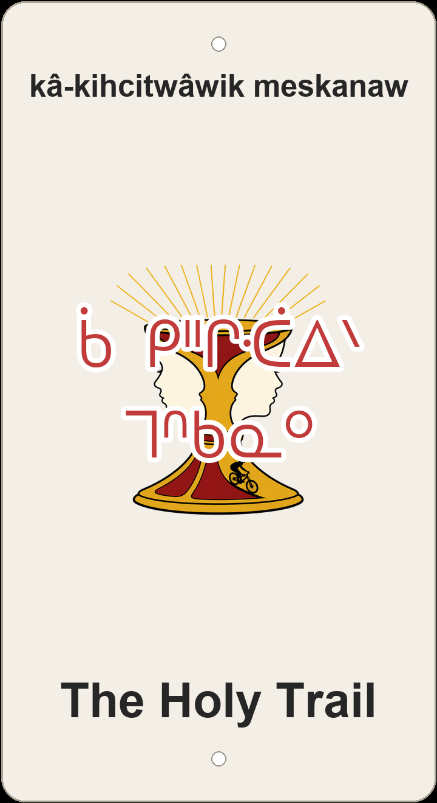

"the sacred/holy trail"

Front view of the 3D-printed sign — Holy Grail goblet / Rubin vase illusion with a rider descending the base (screenprint).
The Holy Trail stacks English movie comedy onto Cree awe: Monty Python's quest for the Holy Grail becomes a short Forest Heights descent, and the plaque answers with kâ-kihcitwâwik meskanaw 'the sacred/holy trail' — kâ- 'that which' + kihcitwâwik 'sacred, holy' (from kihcitwâw-, kin to kihci- 'great/holy') + meskanaw 'trail.' English holy and Grail ride in as pop-culture noise; Cree keeps the reverent reading on the sign.
The screenprint icon makes the English pun visible: a Holy Grail goblet doubles as a Rubin vase/face illusion, with a biker riding down the base — sacred cup and downhill rider in one image. Cross-reference cousins stay off the plaque: hyphenated manitow-meskanaw 'Creator/spirit trail' pushes the divinity harder; meskanaw kâ-pîhonsoik 'the trail full of holes' is the straight holy/holey joke (pîhonso- / wîhkwêw 'hole').
Forest Heights around here is a hillside of nicknames talking to each other: Caddytrack (pêyahikan meskanaw / otâpânâsko-meskanaw) and Shooter McGavin (pâskisikêw Makâpin) tip golf-movie winks; Happy Ending (sîkinikêwin iskwayâk) and the Star Wars cluster (Lower Ewok, Master Yoda) share the same pop-culture register as Andre's Trail, Rattlesnake, Prime Rib, McAloon R.I.P., and Drop In — English trail names braided into one network.
Like every sign in this series, The Holy Trail sits on ᓀᐦᐃᔭᐤ ᐊᐢᑭᕀ Nêhiyaw-Askiy — Plains Cree territory, Treaty 6, and a homeland of the Métis Nation. These plaques are one way of putting nêhiyawêwin back on the land it was always spoken on.
A ~305 m line in Forest Heights with about 17 m of net descent — a short connector in the local web beside Caddytrack, Happy Ending, and the Star Wars names. Tap through to Trailforks for the mapped line (28 track points) and rider reports.
Explore the trail on Trailforks, with a local preview from the uploaded GPX.
Alternate rendering: manitow 'Great Spirit/God' as modifier = a divine path. Softer than 'sacred' for some readers; not on this plaque.
Literal English holy/holey pun; pîhonso-/wîhkwêw 'hole'. A joke reading, not the plaque name.
| English | SRO | Syllabics |
|---|---|---|
| the sacred/holy trail (the plaque) | kâ-kihcitwâwik meskanaw | ᑳ ᑭᐦᒋᑣᐃᐠ ᒣᐢᑲᓇᐤ |
| Creator/spirit trail | manitow-meskanaw | ᒪᓂᑐ ᒣᐢᑲᓇᐤ |
| the trail full of holes | meskanaw kâ-pîhonsoik | ᒣᐢᑲᓇᐤ ᑳ ᐯᐦᐅᐣᓱᐃᐠ |
| sacred, holy | kihcitwâw | ᑭᐦᒋᑣᐃᐠ |
| trail, road, path | meskanaw | ᒣᐢᑲᓇᐤ |
| Great Spirit / God | manitow | ᒪᓂᑐ |
SRO uses ê î ô â. Syllabics match the SRO shown.
Dialectal preferences may affect minor spelling choices; check local norms for signage.
References: itwêwina, Online Cree Dictionary, Plains Cree Dictionary
Each sign is 3D printed in Edmonton. Want one for your own trail, cabin or wall? Email hello@nehiyomtb.ca.